Introduction
Machine Learning and Deep learning have been popular over a decay with a significant progress in both Research and Industry. However, it requires some background knowledges in terms of probabilistic and mathematic concepts as well as the coding languages and platforms that can be used. In this tutorial, we will go thought the whole process to build the classification model using deep learning. This tutorial will hopefully help the beginners to approach the Deep Learning field in the easiest way.
First of all, we have to understand what is machine learning and deep learning and why we use it for classification problems. Machine Learning is a general concept for the use of computer that are able to perform a specific task wiout following explicit instructions [1]. We can apply implicit algorithms with statistical model to analyze and build the mathematical interference from patterns in data. For further learning curves in Machine Learning, I would suggest to read Introduction to Machine Learning with Python.
Python is well-known for the Data Science and Machine Learning Engineer, which supports various useful tools and libraries for building and analyzing the model as well as evaluating the performance. In this example, we will use the Jupiter Notebook working in Google Colab for GPU supports. GPU will help us with faster operation implementation for Machine Learning application comparing to CPU [2]. Most of the training workload will be implemented on GPU.
Kaggle is a biggest Data Science community where we can access to multiple opensource dataset. Furthermore, it also supports to imports the dataset to Jupiter Notebook in Google Colab.
That's it for the introduction, now we have a basic understanding about what we will do in this tutorial. Let's start !!!
Data Processing
In Google Colab, create a Jupiter Notebook and import the libraries. This tutorial will use Tensorflow library to build the model.
In our kaggle profile, we have to export API token that contains our identity to access the dataset.

We can install Kaggle, import the kaggle.json file and download the dataset. The dataset will includes 1661 images belonging to 3 classes ("Motobikes", "Airplanes", "Schooner"). 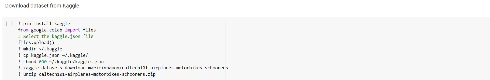
Let's configure and load our dataset as image below: 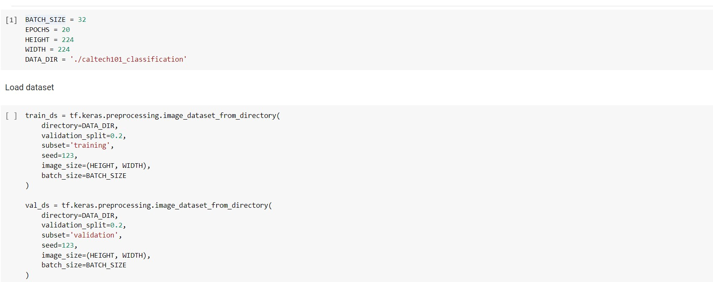 Batchsize is the number of image we can load for each computational iteration. It will depend on the RAM we have in our server. However, we should fully utilize the RAM to load as much sample as possible in one batch. The reason is that the model will learn each batch separatedly and the machine will have multiple overhead to run large number of batches while the connection between the sample from different batches will not be seen in model training.
Epoch, on the other hand, is a number of passes the whole training data is go through. Ideally, the larger epoch, the more fitting the model will be. Therefore, we have to manage the epoch value so that the model will not be underfitting or overfitting.
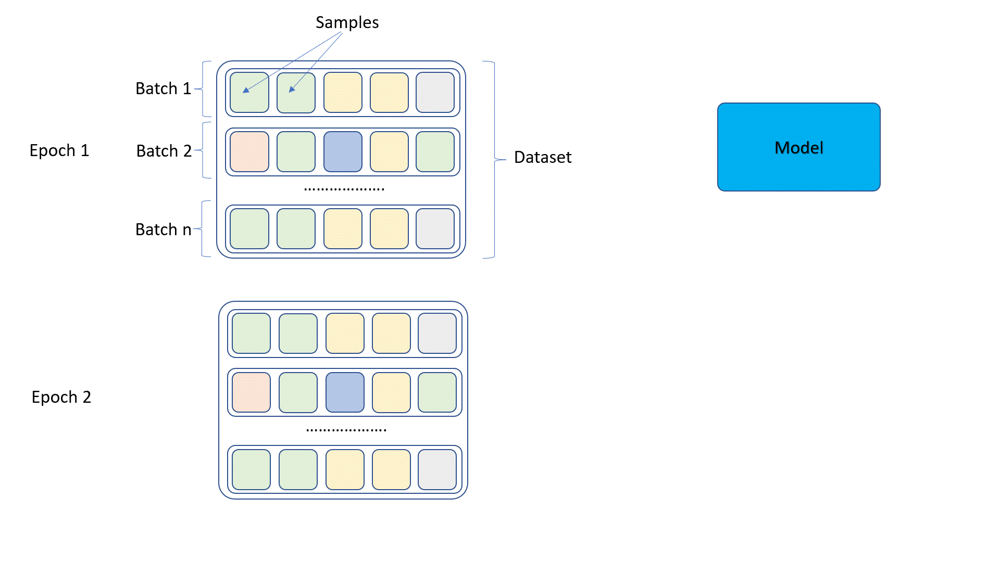Dataset Loading is also an important step where we devide the whole dataset into training data and validating data. As a common practice in Machine Learning, the ratio would be 80:20 which mean 80% of data is used for training and 20% of data is used for validation. The images may vary in resolution, which causes the critical problem in model building where the size of each matrix is different. Thus, we have to scale all images in to the same size as defined. We can look at some samples in the dataset to see the configuration.
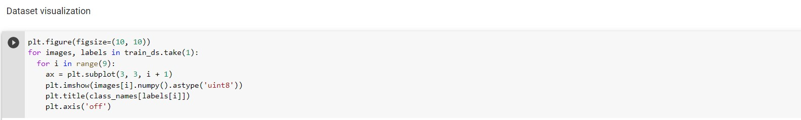 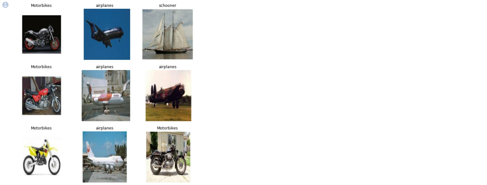Dataset Shuffle is a preprocessing step where we want the distribution of the data is randomly.
Now we already have the datasets, let try to build the convolutional neural network to classify the images. At this stage, I will assume that we already know the basic concept of CNN including Kernel, convolution layers, regulation layer, and dense layer. For those who need to understand these concepts, I would suggest reading the references [3]. First of all, we will create the backbone architecture of our model. Backbone Architecture is the layout of network including number of convolution layers, how the layers are connected, what is the filter size, etc. We can refer some famous CNN model such as VGG, GoogleNet, ResNet, etc. However, this problem is too small to use the famous backbones (we have only 3 classes). I will start building everything randomely.
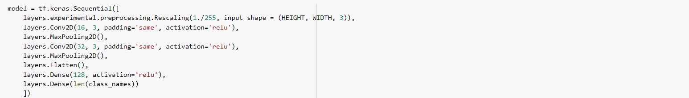As you can see, we have 2 convolution layers with the Maxpooling after each evolution. following that is the flatten layer to convert all the features into 1 vector, following is the fully connected neural network to classify the images base on the features. To see the model configuration, we can use model.summary().

After going through the convolution layers, we will have 100352 features that is used to classify the images. Let's start training and validate the performance of model.
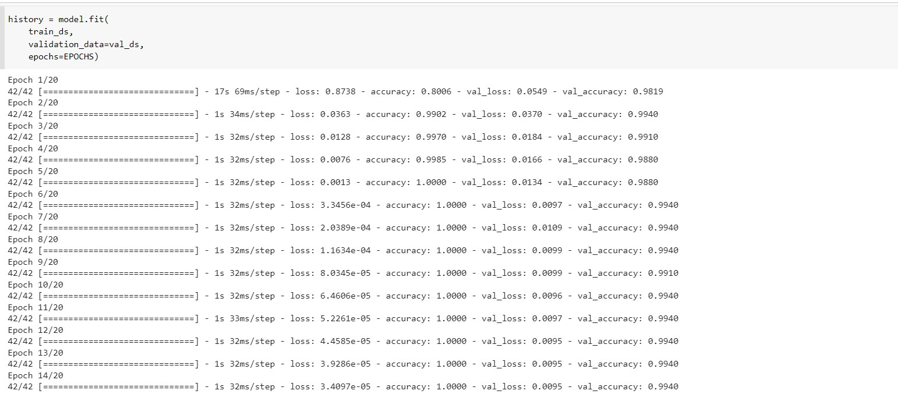 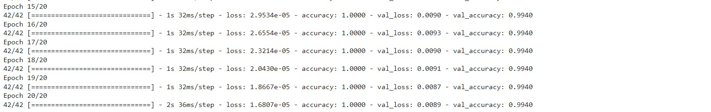Well, our model seems perform very well with accuracy upto 0.994. This is awesome for the first try!!! Let plot the error durign training and the performance to see what actually happened.
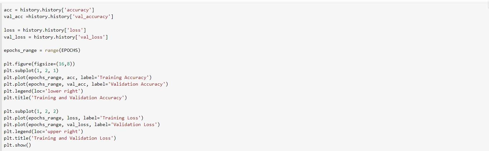 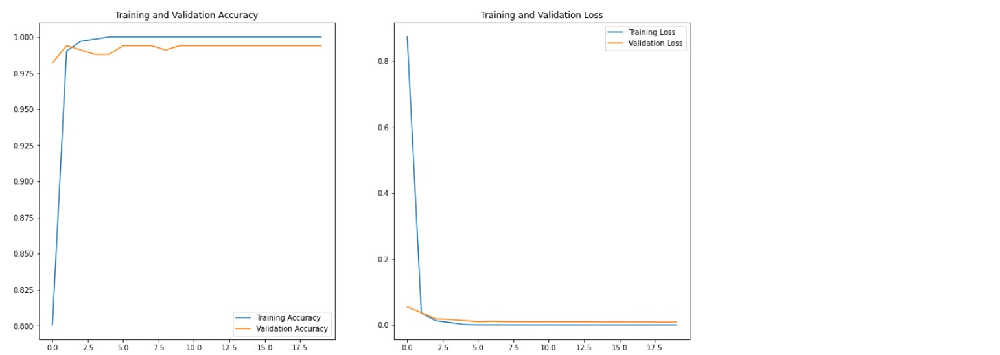The loss of training and validating seem converse very well. Let try to increase the model size (add one more convolution layer into the model) to see what happen
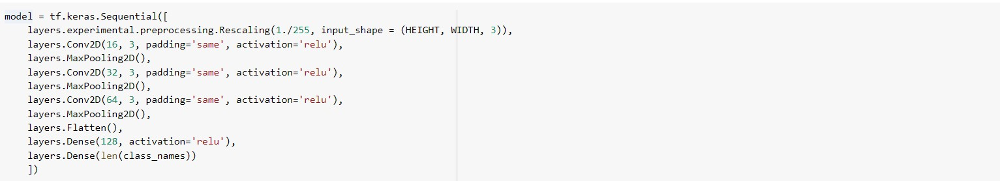 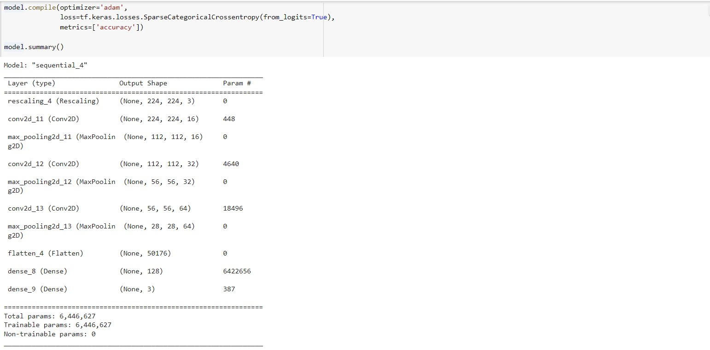Now the number of features after convolution layers reduces to 50176. The reduction caused by one more filter is added so that the features is now more generic.
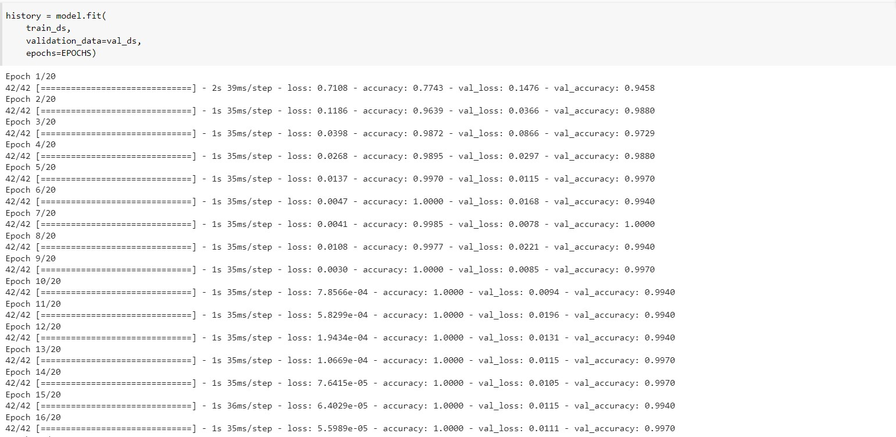 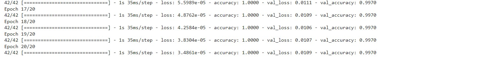The accuracy on validation increase by 0.3%. let add one more layer !!!!
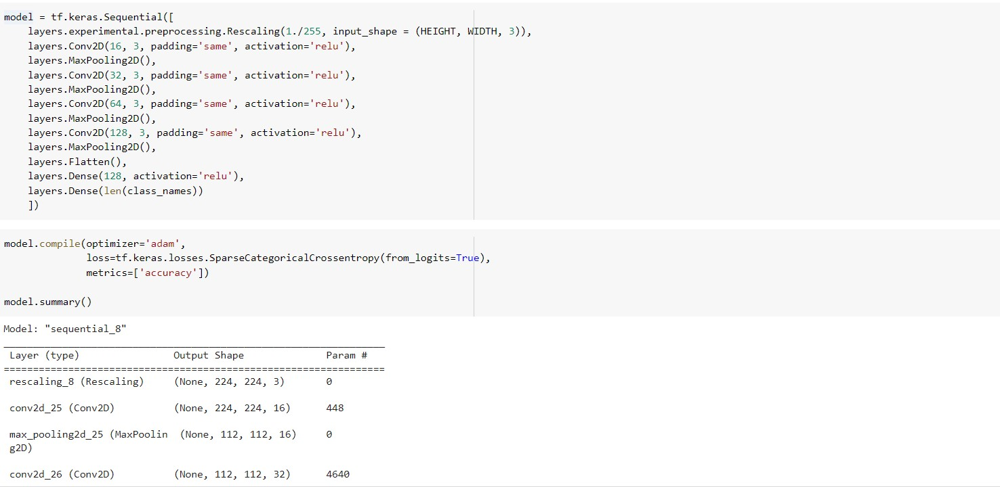 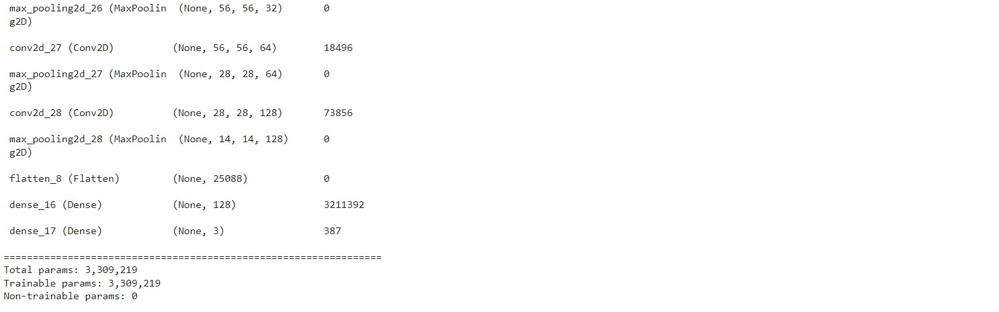The more layer we add in, the less features we have after convolution. But is it mean that the model is smaller? Let run it to see.
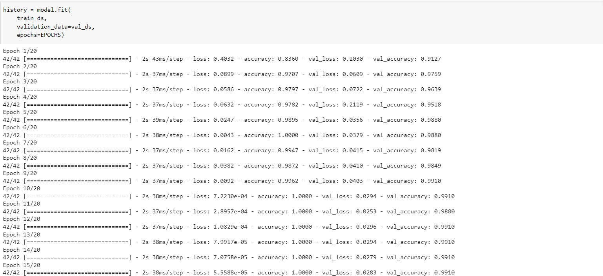 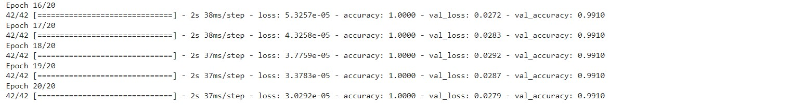The time that we spend to train model each epoch actually longer in this test (from 1s to 2s). Yes, the problem here is we add one more layer which increase the computational cost significantly. Although the dense network size reduced, but most of computational cost happen in convolution layers. Furthermore, The accuracy decreased.
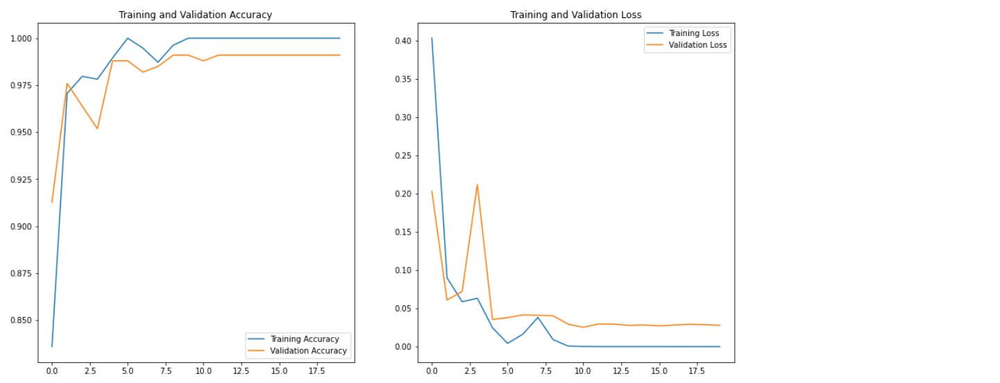Looking at the Loss during training and validation, we can see that there is always a gap between the two set. Now let try to increase the epoch to 50 to see if it actually help.
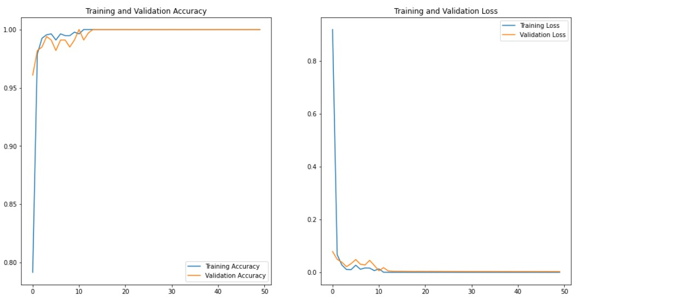Excellent!!!, we can classify the images correctly. But this is not always the case. Let me try to run the model one more time.
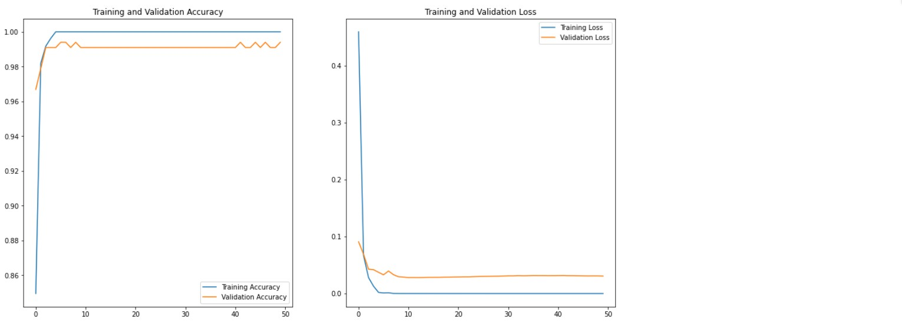Performance is different with previous time. Why that is the case?. Well, the model will strongly depend on how we initialize the value of it. So in two different runs, the first model can converge very well why the second run, the model is not that good. But the performance is not that big. I also try with the bigger batch size (64) to see how it affect the model.
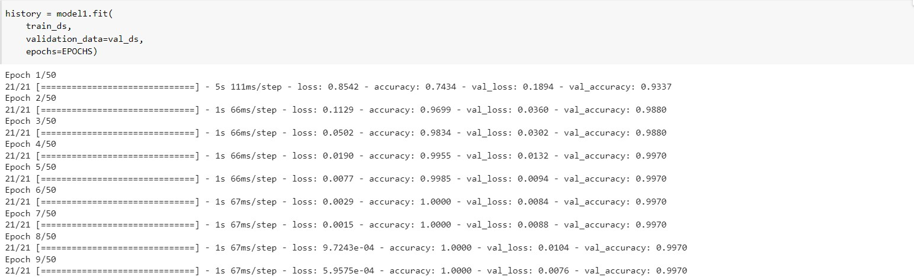As a result, number of step in one epoch reduce by half, but each step will consume more time to train the model (approximately double) and the total time is still the same. However, this is not the case where we train with our server because the loading time is much longer from disk, so bigger batchsize will help reduce the training time.
Data Augumentation
Notice that the training accuracy is always 1.00 while the validation accuracy varies from multiple trials. In an effort to trying reduce that overfitting, I find a technique called Data Augumentation to increase a dataset size and increase the randomeness of objects []. We can either Rotate, Zoom or Flip the images to receive the new images that still represent for the same objects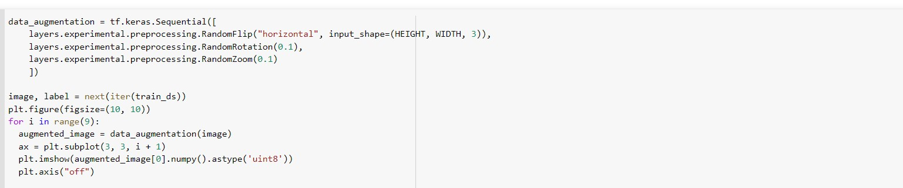 As we can see, the Airplane now is showed in multiple angles, which will increase the randomness of the data. According to TensorFlow [3], we have 2 ways to augument data
- Augument data at the preprocessing data in our dataset
- Augument data as a part of our model
The loss of training set is now not always 1.00 because we gradually add the new samples (from augumentation) into the data set, so that it will increase the generalization of the model.
Conclusion
This blog shows you how to build a basic CNN model for image classification on Google Colab. The code for this tutorial can be found here. We already learn some basic concept of hyperparameter such as Batch and Epoches. How it affect the model and how to build our model from scratch. The model can classify the images in Caltech101 dataset with accuracy of 99%. We also examine the data Augmentation Teniques to increase a datasize and reduce the overfitting.
Contribution
The Notebook have been developed by Tien Pham with the references listed below (Mostly from Tensorflow and some forum such as kaggle to debug and feed the data into Google Colab). My contributions are listed below:
References
[1]. Müller, Andreas C., and Sarah Guido. Introduction to machine learning with Python: a guide for data scientists. " O'Reilly Media, Inc.", 2016.
[2]. Schlegel, Daniel. "Deep machine learning on Gpu." University of Heidelber-Ziti 12 (2015).
[3]. TensorFlow.
[4]. Deng, Jia, et al. "Imagenet: A large-scale hierarchical image database." 2009 IEEE conference on computer vision and pattern recognition. Ieee, 2009.